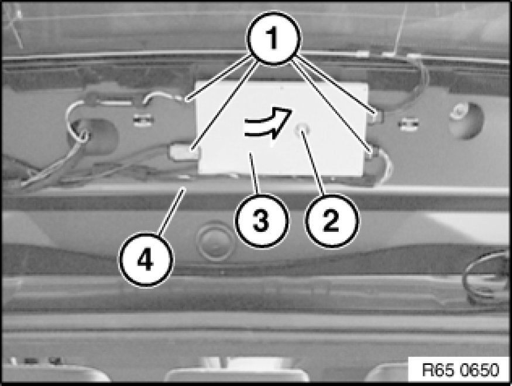
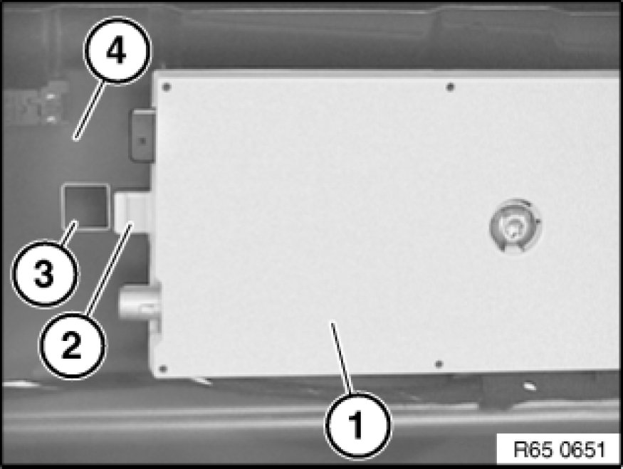

Removing and Installing/Replacing Antenna Amplifier
65 20 090 - Removing and installing or replacing antenna amplifier

Necessary preliminary tasks:
- Remove trim for rear window frame at top Removing and Installing/Replacing Trim for Rear Window Frame at Top.

Unlock plug connections (1) and disconnect.
Unscrew bolt (2).
Remove antenna amplifier (3) in direction of arrow from rear lid (4).

Installation:
Tab (2) of antenna amplifier (1) must be inserted in cutout (3) for rear lid (4).